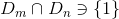
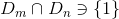
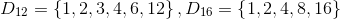
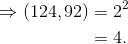
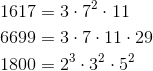
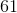
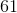
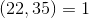

Divizori comuni
Divizori comuni a două sau a mai multor numere naturale
Fie  și
și  două numere naturale nenule.
două numere naturale nenule.
Notăm cu  mulțimea tuturor divizorilor lui , iar cu
mulțimea tuturor divizorilor lui , iar cu  mulțimea tuturor divizorilor lui .
mulțimea tuturor divizorilor lui .
Știm că  are o infinitate de divizori.
are o infinitate de divizori.
Cum și sunt nenule, înseamnă că cele două numere au un număr finit de divizori, deci mulțimile și sunt finite.
Pentru a determina mulțimea divizorilor comuni celor două numere, se face intersecția celor două mulțimi, adică se obține o mulțime formată doar din elementele comune celor două mulțimi și .
Vom nota mulțimea divizorilor comuni ai numerelor și cu  .
.
Această mulțime este:
- nevidă, deoarece
 și
și  ; deci ;
; deci ; - finită, deoarece și sunt finite;
Analog, pentru trei sau mai multe numere naturale, pentru a determina mulțimea divizorilor comuni, se determină mulțimea divizorilor pentru fiecare număr, după care se face intersecția mulțimilor obținute.
Definiția NN32: Mulțimea divizorilor comuni
Mulțimea alcătuită din elementele comune ale mulțimilor divizorilor numerelor considerate se numește mulțimea divizorilor comuni celor trei sau mai multe numere naturale considerate.
Observație:
Proprietățile mulțimii divizorilor comuni de mai sus (pentru cazul în care considerăm două numere naturale) se păstează și în cazul mai multor numere.
Cel mai mare divizor comun (c.m.md.c.)
Definiția NN33: Cel mai mare divizor comun a două numere
Cel mai mare divizor comun a două numere naturale și este cel mai mare element al mulțimii
.
Observație:
Analog, cel mai mare divizor comun a trei sau mai multe numere naturale este cel mai mare element al mulțimii divizorilor comuni ai celor trei sau mai multe numere.
Pentru a determina cel mai mare divizor comun a două sau mai multe numere naturale nenule și diferite de  , se descompun numerele în produs de puteri de factori primi, după care se aleg toți factorii primi comuni la puterea cea mai mică, o singură dată, și se înmulțesc.
, se descompun numerele în produs de puteri de factori primi, după care se aleg toți factorii primi comuni la puterea cea mai mică, o singură dată, și se înmulțesc.
Rezultatul obținut este cel mai mare divizor comun (prescurtat  ) al numerelor considerate.
) al numerelor considerate.
Notații:
- al numerelor naturale nenule și se notează
 ;
; - al numerelor naturale , și
 se notează
se notează  , etc.
, etc.
Observație:
Pentru orice număr natural , al lui și este :

Numere prime între ele
Definiția NN34: Numere prime între ele
Fie și două numere naturale nenule.
Numerele și se numesc prime între ele dacă cel mai mare divizor comun al lor este :

Observații:
- Oricare două numere naturale prime sunt prime între ele.
- Două numere naturale neprime pot fi prime între ele.
Divizori comuni - exemple
Divizori comuni a două sau mai multe numere naturale-exemple
- 
 ;
;

 .
.
Cel mai mare divizor comun (c.m.md.c.)-exemple
- Fie numerele
 și
și  .
.
Descompunerile în factori primi ale celor două numere sunt:


Deci, avem:


 al numerelor și este
al numerelor și este  .
.
- Fie numerele
 și
și  .
.
Descompunerile în factori primi ale celor două numere sunt:


Deci:

Atunci:
 .
.
al numerelor și este  .
.
- Fie numerele
 ,
,  și
și  .
.
Descompunerile în factori primi ale celor trei numere date sunt:


Avem:

Atunci:
 .
.
Deci, al numerelor , și este .
Numere prime între ele-exemple
- Numerele
 sunt prime. Să se stabiliească dacă numerele
sunt prime. Să se stabiliească dacă numerele  și ,
și ,  și
și  , respectiv
, respectiv  și  sunt prime între ele.
și  sunt prime între ele. , deci cele două numere sunt prime între ele;
, deci cele două numere sunt prime între ele; , deci numerele și sunt prime între ele;
, deci numerele și sunt prime între ele; , deci numerele date sunt prime între ele.
, deci numerele date sunt prime între ele.
- Să se precizele dacă numerele și
 ,
,  și
și  , respectiv
, respectiv  și
și  sunt prime între ele, considerând faptul că nici unul dintre aceste numere nu este prim.
sunt prime între ele, considerând faptul că nici unul dintre aceste numere nu este prim. , rezultă că cele două numere sunt prime între ele;
, rezultă că cele două numere sunt prime între ele;- , deci numerele sunt prime între ele;
 , rezultă că numerele și sunt prime între ele.
, rezultă că numerele și sunt prime între ele.